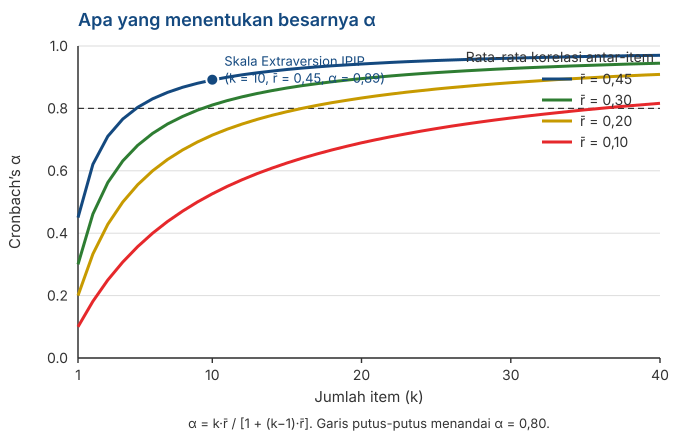

Reliabilitas: Konsep Dasar dan Implementasinya
Penyusunan Skala Psikologi
2026-08-27
Outline
- Reliabilitas terdiri atas tiga pertanyaan yang berbeda
- Split-half dan rumus Spearman-Brown
- Cronbach’s alpha: apa yang sebenarnya diukurnya
- Demonstrasi dengan data riil: \(\alpha\) tidak bisa mendeteksi multidimensionalitas
- Koefisien omega dan asumsi tau-equivalent dari Pertemuan 3
- Menghitungnya di jamovi, dan apa yang sebaiknya Anda laporkan
Dari definisi ke perhitungan
Yang sudah kita punya
Di Pertemuan 3 kita mendefinisikan reliabilitas sebagai proporsi varians:
\[\rho_{XX'} = \frac{\sigma^2_T}{\sigma^2_X}\]
Masalahnya, \(\sigma^2_T\) tidak bisa kita amati. Jadi rumus itu tidak bisa langsung dihitung.
Seluruh isi pertemuan hari ini adalah tentang cara mengestimasinya dari sesuatu yang bisa kita amati: korelasi antar-item.
Data yang kita pakai hari ini
Semua angka pada slide-slide berikut dihitung dari data/data.csv di repositori mata kuliah ini — 50 item IPIP Big Five, n = 19.718. Anda bisa menghitung ulang semuanya sendiri di jamovi.
Reliabilitas
Tiga pertanyaan yang berbeda
| Pertanyaan | Sumber error yang diperiksa | Metode |
|---|---|---|
| Apakah skornya stabil lintas waktu? | Fluktuasi sesaat | Test-retest |
| Apakah skornya setara antar bentuk tes yang berbeda? | Pemilihan item | Alternate forms |
| Apakah item-itemnya saling konsisten secara internal? | Variasi antar-item | Split-half, \(\alpha\), \(\omega\) |
Tiga cara yang berbeda
Ketiganya menguji sumber error yang berbeda. Sebuah skala bisa sangat konsisten secara internal tetapi sama sekali tidak stabil antarwaktu (e.g., dari minggu ke minggu).
Melaporkan \(\alpha\) tidak memberikan informasi apapun tentang stabilitas skor Anda antarwaktu.
Test-retest
Ukur orang yang sama dua kali, lalu korelasikan kedua skornya.
Jarak waktunya sangat menentukan. Terlalu dekat, responden masih ingat jawabannya. Terlalu jauh, atribut ukurnya mungkin memang sudah berubah.
Ada satu persoalan yang tidak bisa dihindari: kalau korelasinya rendah, kita tidak bisa membedakan apakah alat ukurnya tidak reliabel atau orangnya memang berubah.
Split-half dan Spearman-Brown
Intinya
Belah skala menjadi dua bagian — misalnya item ganjil dan item genap.
Hitung skor total tiap bagian, lalu korelasikan keduanya.
Kalau kedua bagian mengukur hal yang sama, korelasinya harus tinggi.
Pada skala Extraversion IPIP (10 item), korelasi antara belahan item ganjil dan genap adalah:
\[r = 0{.}748\]
Tetapi ada masalah
Korelasi itu adalah reliabilitas tes sepanjang 5 item, bukan 10 item.
Kita baru saja memotong skala kita menjadi separuhnya, lalu melaporkan reliabilitas versi separuh bagian itu.
Ingat dari Pertemuan 3: makin sedikit item, makin besar porsi error. Jadi angka 0.748 lebih rendah daripada reliabilitas skala yang sebenarnya.
Yang dibutuhkan
Rumus lain yang bisa menjawab: “kalau tes sepanjang n punya reliabilitas x, berapa reliabilitasnya kalau panjangnya dilipatgandakan?”
Rumus Spearman-Brown
Untuk split-half, koreksi dari separuh ke full-length:
\[\rho_{\text{penuh}} = \frac{2r}{1+r}\]
Dengan \(r = 0{.}748\):
\[\rho = \frac{2 \times 0{.}748}{1 + 0{.}748} = \frac{1{.}496}{1{.}748} = \mathbf{0{.}856}\]
Note
Rumus ini diturunkan secara terpisah oleh Spearman (1910) dan Brown (1910) pada tahun dan jurnal yang sama, sehingga namanya digabung.
Bentuk umumnya
Kalau panjang tes dikalikan \(n\) kali:
\[\rho^* = \frac{n\rho}{1 + (n-1)\rho}\]
Ingat kembali di Pertemuan 1 kita membahas anak panah Bernoulli. Rumus Spearman-Brown ini menunjukkan mengapa menambah item menaikkan reliabilitas.
Tetapi…
Rumus ini mengasumsikan item tambahannya setara dengan item yang sudah ada. Menambah sepuluh item yang ditulis asal-asalan tidak akan menghasilkan reliabilitas yang baik.
Belahan yang mana?
Skala 10 item bisa dibelah menjadi dua bagian dengan 126 cara berbeda. Ganjil-genap hanyalah salah satunya.
Kami mencoba 500 pembelahan acak pada skala Extraversion. Hasil Spearman-Brown-nya berkisar dari 0.845 sampai 0.920.
Jadi jawabannya bergantung pada belahan mana yang kebetulan Anda pilih. Ini tentu bukan situasi yang ideal.
Jalan keluarnya
Kalau tiap pembelahan memberi jawaban yang berbeda, ambil saja rata-rata dari semuanya.
Inilah dasar rumus Cronbach’s \(\alpha\).
Cronbach’s alpha
Rumusnya
\[\alpha = \frac{k}{k-1}\left(1 - \frac{\sum \sigma^2_i}{\sigma^2_X}\right)\]
dengan \(k\) = jumlah item, \(\sigma^2_i\) = varians tiap item, \(\sigma^2_X\) = varians skor total.
Perhatikan apa yang dibandingkan: jumlah varians item dengan varians skor total.
Kalau item-itemnya tidak berkorelasi, varians total hanya sebesar jumlah varians item, dan \(\alpha\) mendekati nol.
Kalau item-itemnya berkorelasi kuat, varians total jauh lebih besar, dan \(\alpha\) mendekati satu.
\(\alpha\) adalah rata-rata dari semua pembelahan
Dari 500 pembelahan acak tadi, rata-rata koefisien Spearman-Brown-nya adalah 0.892.
Cronbach’s \(\alpha\) untuk skala yang sama adalah 0.892.
Angkanya sama persis.
Apa arti \(\alpha\) sebenarnya
\(\alpha\) bukan koefisien istimewa. Ia adalah rata-rata dari seluruh kemungkinan split-half pada skala Anda (Cronbach, 1951).
Apa yang menentukan besarnya \(\alpha\)

Hanya dua hal
- Jumlah item (\(k\)) dan rata-rata korelasi antar-item (\(\bar{r}\)). Tidak ada yang lain.
\[\alpha = \frac{k\bar{r}}{1 + (k-1)\bar{r}}\]
Skala Extraversion: \(\bar{r} = 0{.}45\) dengan 10 item, menghasilkan \(\alpha = 0{.}89\).
Perhatikan kurva paling bawah: dengan \(\bar{r} = 0{.}10\), Anda butuh lebih dari 35 item untuk mencapai 0.80.
Konsekuensi yang perlu diperhatikan
Karena \(k\) ikut menentukan, \(\alpha\) yang tinggi bisa dicapai hanya dengan menambah item. Anda tidak perlu item yang lebih baik; cukup item yang lebih banyak.
Proyeksi Spearman-Brown pada skala IPIP
Mulai dari \(\alpha = 0{.}892\) pada 10 item:
| Jumlah item | Proyeksi \(\alpha\) |
|---|---|
| 5 | 0.805 |
| 10 | 0.892 |
| 20 | 0.943 |
| 30 | 0.961 |
Menggandakan panjang skala dari 10 ke 20 item menaikkan \(\alpha\) sebesar 0.05. Menambah 10 item lagi (dari 20 ke 30, naik 50%) hanya menambah 0.018.
Tambahan keuntungannya makin lama makin kecil, sementara beban kognitif partisipan terus bertambah.
Tentang ambang 0.70
Hampir semua orang mengutip 0.70 sebagai batas minimum, dan menyebut Nunnally sebagai sumbernya.
Lance, Butts, & Michels (2006) memeriksa sumber aslinya. Nunnally menyebut 0.70 hanya untuk tahap awal penelitian; untuk penelitian dasar ia menyarankan 0.80, dan untuk pengambilan keputusan tentang individu 0.90 atau lebih.
Angka 0.70 yang dipakai di mana-mana sebenarnya berasal dari kutipan yang tidak tepat.
Yang perlu Anda lakukan
Jangan memperlakukan 0.70 sebagai threshold. Sesuaikan dengan tujuan penggunaan skor Anda: untuk penelitian kelompok, 0.70 memang memadai; untuk keputusan tentang individu utamanya ketika konteksnya high-stake, 0.7 masih jauh dari cukup.
Apa yang tidak diukur oleh \(\alpha\)
Sebuah percobaan
Kami mengambil 5 item Extraversion dan 5 item Neuroticism dari data yang sama.
Keduanya jelas mengukur konstruk yang berbeda. Skala gabungan ini secara substantif tidak masuk akal.
Lalu kami memperlakukannya sebagai satu skala 10 item dan menghitung \(\alpha\).
\(\alpha = 0{.}616\)
Mengapa gabungan dua skala menghasilkan \(\alpha\) yang tidak terlalu jelek?
Angka 0.616 tidak terlihat bermasalah. Ia terlihat seperti skala yang sedang-sedang saja dan masih bisa diperbaiki.
Banyak laporan akan menuliskannya sebagai “cukup memadai” dan melanjutkan analisis.
Padahal skala itu mencampur dua konstruk yang berbeda.
Poinnya
\(\alpha\) tidak dirancang untuk mendeteksi berapa banyak dimensi yang ada di dalam skala Anda. Ia hanya melihat rata-rata korelasi antar-item dan jumlah item.
Apa yang sebenarnya terjadi
| Rata-rata korelasi | |
|---|---|
| Antar-item di dalam subskala Extraversion | 0.507 |
| Antar-item di dalam subskala Neuroticism | 0.421 |
| Antar-subskala | −0.125 |
Di dalam tiap subskala, korelasinya tinggi. Itu sudah cukup untuk mengangkat \(\alpha\) ke 0.616.
Korelasi antar-subskala negatif dan kecil — tanda bahwa keduanya bukan satu konstruk yang sama.
Eigenvalue matriks korelasinya: 3.53 — 2.23 — 0.79. Dua yang pertama sama-sama besar, artinya ada dua dimensi, bukan satu.
Sekarang hitung \(\omega\)
\(\alpha = 0{.}616\) tetapi \(\omega = 0{.}151\)
\(\omega\) menanyakan hal yang berbeda dibandingkan \(\alpha\): berapa proporsi varians skor total yang berasal dari satu faktor laten yang general?
Pada campuran dua subskala ini, jawabannya nyaris tidak ada, karena memang tidak ada satu faktor umum di sana.
Kesimpulannya
- \(\alpha\) = 0.616 artinya “item-item ini saling berkorelasi”
- \(\omega\) = 0.151 artinya “item-item ini tidak mengukur satu konstruk yang sama”
Omega
Kenapa \(\alpha\) saja tidak cukup
Ingat dari Pertemuan 3: \(\alpha\) mengasumsikan model tau-equivalent, yaitu semua item punya hubungan yang sama kuat dengan variabel laten.
Kalau item Anda sebenarnya congeneric (dan hampir selalu seperti ini), asumsi ini tidak terpenuhi.
\(\omega\) tidak mensyaratkan asumsi tersebut. Perhitungannya memakai korelasi antara masing-masing item dengan faktor laten.
\[\omega = \frac{\left(\sum \lambda_i\right)^2}{\left(\sum \lambda_i\right)^2 + \sum \psi_i}\]
dengan \(\lambda_i\) = loading item ke-\(i\), dan \(\psi_i\) = varians error item tersebut.
Pada skala yang benar-benar satu dimensi
Skala Extraversion IPIP, 10 item:
| Nilai | |
|---|---|
| Cronbach’s \(\alpha\) | 0.892 |
| McDonald’s \(\omega\) | 0.893 |
| Rentang loading | 0.55 – 0.76 |
Keduanya hampir sama.
Loading-nya cukup seragam (0.55 sampai 0.76), sehingga pelanggaran asumsi tau-equivalent di sini kecil.
Catatan
\(\omega\) bukan selalu lebih besar atau lebih kecil dari \(\alpha\). Ketika itemnya seragam, keduanya berdekatan. Perbedaannya muncul justru ketika struktur konstruk Anda tidak unidimensional.
Kapan keduanya berbeda jauh
Ketika loading (i.e., korelasi antara item dengan faktor laten) item sangat beragam. Di sini \(\alpha\) cenderung lebih rendah daripada reliabilitas yang sesungguhnya.
Ketika skalanya multidimensional. Di sini \(\alpha\) tetap terlihat normal, sementara \(\omega\) sangat rendah — persis seperti demonstrasi tadi.
Cara memakainya secara praktis
Hitung keduanya. Kalau \(\alpha\) dan \(\omega\) berdekatan, Anda punya bukti tambahan bahwa struktur skala Anda unidimensional. Kalau jaraknya jauh, itu tanda bahwa ada asumsi tentang konstruk yang harus diperiksa.
Tetapi keduanya tidak menggantikan pemeriksaan struktur konstruk
Baik \(\alpha\) maupun \(\omega\) adalah satu koefisien yang meringkas keseluruhan skala.
Satu angka tidak bisa memberi tahu Anda ada berapa dimensi di dalam item Anda.
Untuk itu Anda perlu melihat struktur korelasinya sendiri: eigenvalue, scree plot, dengan analisis faktor.
Ketepatan pada tingkat individu
Standard error of measurement (SEM) pada dataset IPIP
Skala Extraversion IPIP: \(\sigma_X = 9{.}22\) dan \(\alpha = 0{.}892\).
\[SEM = \sigma_X\sqrt{1-\alpha} = 9{.}22 \times \sqrt{0{.}108} = \mathbf{3{.}03}\]
Interval kepercayaan (confidence interval) 95% untuk seseorang yang mendapat skor 30:
\[30 \pm 1{.}96 \times 3{.}03 \;\approx\; 24{.}1 \text{ sampai } 35{.}9\]
Perhatikan lebar intervalnya
Ini adalah skala dengan \(\alpha = 0{.}89\) — tergolong sangat baik. Namun interval kepercayaan satu orang selebar hampir 12 poin pada skala yang rentangnya 10 sampai 50.
Dua orang dengan skor 30 dan 35 tidak bisa Anda katakan berbeda signifikan.
Kenapa ini penting untuk Pertemuan 14
Ketika Anda menyusun norma nanti, Anda akan memotong sebaran skor menjadi kategori.
Kalau lebar kategorinya lebih kecil daripada SEM, kategori itu tidak stabil: orang yang sama bisa berpindah kategori hanya karena mengisi di hari yang berbeda.
\(\alpha\) yang tinggi tidak menjamin Anda dari persoalan ini.
Implementasi di jamovi
Langkah-langkahnya
Buka datanya, lalu Analyses → Factor → Reliability Analysis.
Pindahkan seluruh item skala Anda ke kotak Items.
Buka panel Reverse Scored Items, lalu pindahkan item yang arah pernyataannya terbalik ke sana. Jangan lupakan langkah ini.
Pada Scale Statistics, centang Cronbach’s α dan McDonald’s ω.
Pada Item Statistics, centang item-rest correlation serta Cronbach’s α dan McDonald’s ω if item dropped.
Kesalahan yang paling sering terjadi
Lupa membalik item yang terbalik. Kalau itu terjadi, \(\alpha\) Anda akan turun drastis dan Anda akan mengira skalanya bermasalah — padahal yang bermasalah adalah penskorannya.
Tandanya khas: korelasi item-rest bernilai negatif.
Apa yang akan Anda lihat
Scale Reliability Statistics
| mean | sd | Cronbach’s α | McDonald’s ω | |
|---|---|---|---|---|
| skala | 30.1 | 9.22 | 0.892 | 0.893 |
Item Reliability Statistics (sebagian)
| Item | item-rest correlation | α jika item dibuang |
|---|---|---|
| E5 | 0.71 | 0.876 |
| E7 | 0.70 | 0.877 |
| E4 | 0.68 | 0.878 |
| E1 | 0.63 | 0.882 |
| E8 | 0.52 | 0.889 |
Cara membacanya
Item-rest correlation — korelasi antara item tersebut dan jumlah item lainnya. Nilai di bawah 0.30 biasanya dianggap lemah; nilai negatif hampir selalu berarti salah penskoran.
α jika item dibuang — bandingkan dengan α keseluruhan. Kalau membuang sebuah item menaikkan α, item itu perlu diperiksa.
Pada tabel ini, tidak ada item yang kalau dibuang menaikkan α dari 0.892. Bahkan item terlemah, E8, tetap memberi sumbangan.
Yang perlu diperhatikan
Jangan membuang item hanya karena korelasi item-restnya rendah. Kalau sebuah item penting secara konseptual untuk mendefinisikan konstruk Anda, membuangnya demi menaikkan α berarti Anda menukar validitas isi hanya untuk konsistensi internal.
Memeriksa dimensinya (‘nice to know’)
Analyses → Factor → Exploratory Factor Analysis, lalu perhatikan eigenvalue dan scree plot-nya.
Kalau hanya ada satu eigenvalue yang jauh lebih besar dari sisanya, skala Anda kemungkinan satu dimensi.
Kalau ada dua atau lebih, hitung reliabilitasnya per dimensi, bukan untuk keseluruhan item.
Note
Pada set campuran tadi, eigenvalue-nya 3.53 dan 2.23 — dua-duanya besar. Itulah yang tidak bisa dilihat dari \(\alpha = 0{.}616\).
Apa yang sebaiknya Anda laporkan
Checklist
Koefisien yang dipakai dan nilainya — sebutkan \(\alpha\), \(\omega\), atau keduanya. Jangan cuma menulis “reliabilitas”.
Jumlah item yang dihitung, dan item mana yang diskor balik.
Ukuran dan karakteristik sampel — ingat dari Pertemuan 3 bahwa koefisien ini bergantung pada sampel.
Bukti tentang dimensinya (apabila memungkinkan), sekurang-kurangnya eigenvalue atau scree plot.
SEM, kalau skor Anda akan dipakai untuk menafsirkan individu.
Contoh kalimat pelaporan
“Skala 10 item ini memiliki \(\alpha = 0{.}89\) dan \(\omega = 0{.}89\) pada n = 200 mahasiswa S1 (usia 18–23). Analisis faktor eksploratori menunjukkan satu faktor dominan (eigenvalue 4,5 berbanding 0.9). SEM = 3.0.”
Diskusi kelompok
Empat situasi
Diskusikan dalam kelompok, 25 menit. Untuk tiap situasi: apa yang Anda simpulkan, dan apa langkah berikutnya?
A. Skala 30 item, \(\alpha = 0{.}95\), rata-rata korelasi antar-item 0.42. Peneliti menyimpulkan skalanya sangat baik.
B. Skala 10 item, \(\alpha = 0{.}62\), \(\omega = 0{.}20\), dua eigenvalue besar.
C. Skala 4 item, \(\alpha = 0{.}55\). Kelompok ingin menaikkannya sampai di atas 0.70.
D. Satu item punya item-rest correlation sebesar −0.38.
Pertanyaan penutup
Dari keempat situasi tadi, mana yang paling bermasalah kalau lolos ke laporan akhir? Kenapa?
Untuk konstruk kelompok Anda, berapa banyak item yang realistis Anda tulis, dan rata-rata korelasi antar-item seperti apa yang Anda harapkan?
Skor kelompok Anda akan dipakai untuk apa — menggambarkan kelompok atau menafsirkan individu? Bagaimana itu mengubah standar reliabilitas yang Anda kejar?
Rangkuman
Enam poin utama
Reliabilitas berkaitan dengan beberapa sumber error. Stabilitas lintas waktu dan konsistensi internal adalah pertanyaan yang berbeda.
Spearman-Brown mengoreksi split-half ke full-length, dan menjelaskan kenapa menambah item menaikkan reliabilitas.
\(\alpha\) adalah rata-rata dari seluruh kemungkinan split-half, dan hanya ditentukan oleh \(k\) dan \(\bar{r}\).
\(\alpha\) yang tinggi bisa diusahakan dengan menambah item, dan \(\alpha\) tidak bisa mendeteksi multidimensionalitas — \(\alpha = 0{.}62\) vs. \(\omega = 0{.}15\) adalah buktinya.
Hitung \(\alpha\) dan \(\omega\) bersama-sama, dan periksa dimensinya secara terpisah.
Ambang 0.70 bukan aturan baku. Standarnya ditentukan oleh tujuan penggunaan skornya.
Untuk Pertemuan 7
Kita masuk ke validitas — dan pertanyaan yang jauh lebih sulit.
- Kenapa validitas adalah sifat tafsiran atas skor, bukan sifat skala. Kita sudah menyinggungnya di Pertemuan 3; minggu depan kita bahas lebih lengkap.
- Jenis-jenis bukti validitas, dan kenapa pembagian lama (isi, kriteria, konstruk) sudah ditinggalkan.
- Validitas isi dan hubungannya dengan CVI yang akan Anda kerjakan di Pertemuan 11.
- Kenapa reliabilitas tinggi tidak menjamin apapun tentang validitas.
Persiapan
Baca DeVellis & Thorpe (2022), Bab 4. Kalau sempat, bab Psychometric Validity pada Bikos.
Ada pertanyaan❓

Catatan
- Paparan disusun dengan menggunakan dan Quarto dengan template dari UNAIR Theme.
- Kontak saya via amelia.zein@psikologi.unair.ac.id
Rujukan
Brown, W. (1910). Some experimental results in the correlation of mental abilities. British Journal of Psychology, 3(3), 296–322.
Cortina, J. M. (1993). What is coefficient alpha? An examination of theory and applications. Journal of Applied Psychology, 78(1), 98–104.
Cronbach, L. J. (1951). Coefficient alpha and the internal structure of tests. Psychometrika, 16(3), 297–334.
DeVellis, R. F., & Thorpe, C. T. (2022). Scale development: Theory and applications (5th ed.). SAGE.
Dunn, T. J., Baguley, T., & Brunsdon, C. (2014). From alpha to omega: A practical solution to the pervasive problem of internal consistency estimation. British Journal of Psychology, 105(3), 399–412.
Lance, C. E., Butts, M. M., & Michels, L. C. (2006). The sources of four commonly reported cutoff criteria: What did they really say? Organizational Research Methods, 9(2), 202–220.
McDonald, R. P. (1999). Test theory: A unified treatment. Lawrence Erlbaum.
Revelle, W., & Zinbarg, R. E. (2009). Coefficients alpha, beta, omega, and the glb: Comments on Sijtsma. Psychometrika, 74(1), 145–154.
Schmitt, N. (1996). Uses and abuses of coefficient alpha. Psychological Assessment, 8(4), 350–353.
Sijtsma, K. (2009). On the use, the misuse, and the very limited usefulness of Cronbach’s alpha. Psychometrika, 74(1), 107–120.
Spearman, C. (1910). Correlation calculated from faulty data. British Journal of Psychology, 3(3), 271–295.